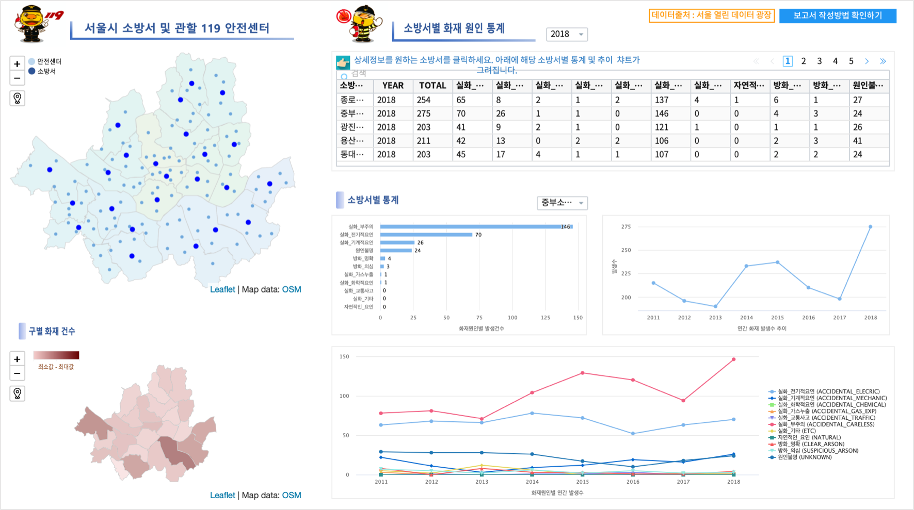
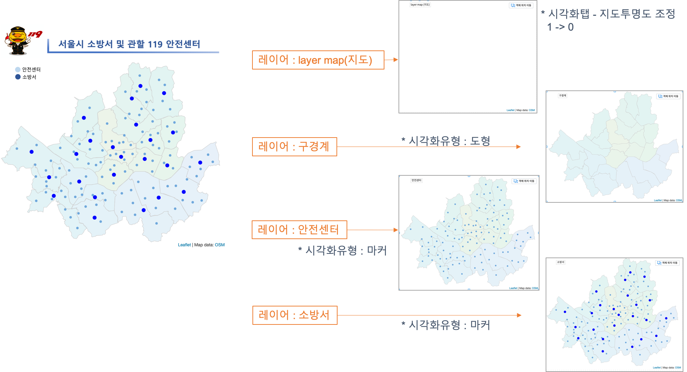
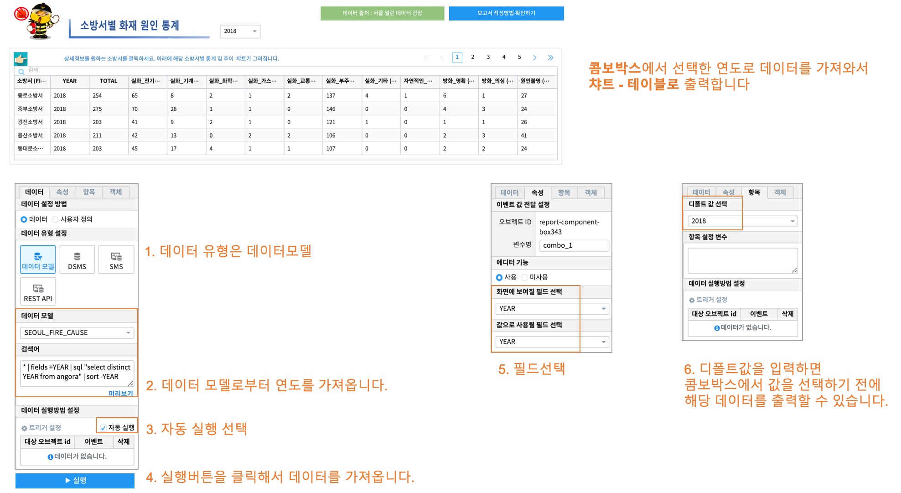

IRIS Studio - 서울시 안전센터와 소방서 위치 지도 / 화재 원인 통계¶
IRIS Studio 를 이용하여 서울시 열린 데이터 광장 에 있는 서울시 안전센터 및 소방서 관할 위치 정보와 화재 원인 통계 데이터를 이용하여 지도와 챠트로 만들어 봅니다.
Contents
데이터 준비¶
데이터 가져오기¶
- 출처
서울시 안전센터, 소방서, 화재 원인 데이터 : 서울시 열린 데이터 광장
서울시 구단위 행정 경계 데이터 ( SHP 파일 ) : 국토교통부 행정구역도 공공 데이터 포털
서울시 구단위 행정 경계 데이터
서울시 관할 소방서 위치 정보
서울시 안전센터 위치 정보
서울시 소방서별 화재 원인 통계
데이터모델 만들기 - MinIO¶
데이터모델 메뉴에서 MinIO 에 저장된 파일들을 데이터모델로 생성합니다.
참고 : 데이터모델 만들기 - MinIO
모델 이름 |
설 명 |
|---|---|
SEOUL_SAFETY_CENTER_COOR |
서울시 안전센터 위치 |
SEOUL_MELT_FIRE_CAUSE |
서울시 소방서별 화재원인 분포 |
SEOUL_GU_WGS84 |
서울 행정구 경계 polygon WGS_84 |
SEOUL_GU_FIRE_CAUSE |
서울시 구별 화재원인 통계 |
SEOUL_GU_COORDINATES |
서울 구청 좌표 및 정보 |
SEOUL_FIRE_STA_COOR |
서울시 소방서 좌표 |
SEOUL_FIRE_CAUSE |
서울시 관할 소방서별 화재원인(2011 ~ 2018년) |
Studio 보고서 따라하기¶
map 1 : 서울시 안전센터 및 관할 소방서 위치 정보¶
레이어별 데이터와 시각화옵션 설정¶
구경계 레이어
안전센터 레이어
소방서 레이어
참고 : 지도 레이어의 시각화옵션 설정은 IRIS Studio - 수원시 공공 데이터 예제 에서 주차장 레이어 만들기 를 참고하세요.
선택한 연도의 소방서별 화재 원인 통계 : 챠트 - 테이블¶
- 조회할 연도를 선택하기 위해 콤보박스를 만듭니다.
- 데이터 출처를 라벨로 표현합니다.
- 테이블에 출력되는 데이터는 콤보박스에 선택한 연도에 해당하는 데이터로만 필터링되어 출력됩니다.
- 테이블에 출력되는 데이터는 다른 오브젝트의 트리거 설정 시에 클릭 이벤트 시 이벤트값으로 전달되도록 설정합니다.
IRIS-Manual : 보고서 작성 에서 이벤트값 전달 설정 과 트리거 설정 을 참조하세요.
화재원인별 연간 발생 건수 추이¶
테이블에서 선택된 소방서의 화재원인별 연간 발생 건수 추이를 챠트-꺽은선형 그래프로 그린 것입니다.
화재원인 별로 multi-line 챠트로 구현합니다.
시각화옵션에서 X축, Y축을 선택할 때 “모두선택” 을 설정하면 미지정된 컬럼중 숫자형 타입의 컬럼들이 모두 선택,지정됩니다.
map 2 : 구별 화재건수¶
구별 화재건수 지도는 “layer map(지도)” 와 “구별 화재건수” 레이어로 이루어져 있습니다.
콤보박스에서 선택된 연도의 데이터로 필터링된 데이터입니다.
구별 화재건수로 그라디언트(진할 수록 많은 발생건수)된 색상으로 표현됩니다.